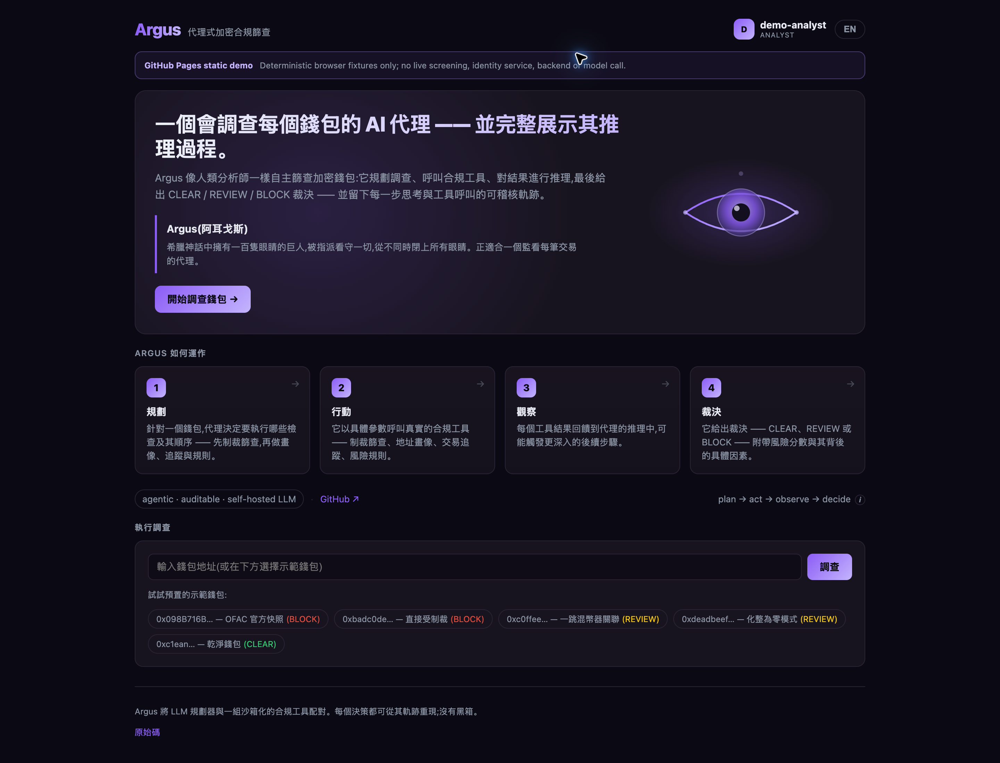

Interview detail 03 · Argus
Argus：治理型调查 Agent
Argus 最重要的不是“模型会不会识别地址风险”，而是把调查做成 plan → act → observe → decide 的受约束闭环：模型负责提出下一步和解释证据，确定性策略负责证据完整性、风险阈值、fail-closed 和最终可审计边界。
Model proposes
Policy disposes
Human review for uncertainty
CLEAR / REVIEW / BLOCK
面试主线：不要让模型直接“拍板”。让模型做调查和归纳，让策略层决定是否允许 CLEAR，让人工处理证据不足和高风险例外。
01
Model vs deterministic policy
哪些判断交给模型，哪些判断放在确定性策略层？
模型适合做开放式的搜索和归纳，策略层适合做不可含糊的授权判断。 我会把最终决策设计成“模型建议 + 规则校验 + policy override”，而不是让模型输出一个无法追溯的自然语言结论。
| 交给模型 | 确定性策略层 |
|---|---|
| 根据当前证据选择下一个工具：sanctions_screen、address_profile、trace_transactions、risk_rules。 | 工具 allowlist、参数 schema、最大 step/budget、超时和每一步持久化。 |
| 从交易、标签和命中结果中提炼 risk factors、时间线和解释。 | direct sanctions hit 的 BLOCK；风险分段阈值；阈值来自可版本化的 policy，而不是 prompt。 |
| 提出 CLEAR / REVIEW / BLOCK 以及下一步补证据建议。 | required evidence 必须成功且非空；证据缺失、错误或 provider 不可用时，禁止 CLEAR。 |
| 生成给 reviewer 看的自然语言摘要。 | 审计日志、decision override、case 状态迁移和人工动作权限。 |
Modelselect next tool
summarize observations
summarize observations
→
Tool sandboxallowlist + schema
evidence with source/time
evidence with source/time
→
Policy guardrequired evidence
thresholds + overrides
thresholds + overrides
→
DecisionCLEAR / REVIEW / BLOCK
persisted and auditable
persisted and auditable
项目依据：/Users/tron/Object/trontech/interview-prep/argus-agent2/backend/agent-orchestrator-service/src/main/java/com/argus/orchestrator/agent/AgentOrchestrator.java、LocalRuleAgentProvider.java、AnthropicLlmProvider.java。

来源：/Users/tron/Object/trontech/interview-prep/agent1/assets/argus-pages.png
// 真实运行时的核心形态：每一步先持久化，再决定是否结束
for (int step = 1; step <= investigation.maxSteps(); step++) {
AgentAction action = llmProvider.nextAction(context);
if (action.type() == FINISH) {
recordFinish(investigation, action);
return complete(investigation);
}
Map<String, Object> observation = toolClient.invoke(
action.toolName(), action.toolArgs());
context.record(action, observation);
recordToolStep(investigation, action, observation);
store.save(investigation);
}
forceReviewOnStepCap(investigation);最好用的一句话：模型负责“调查什么、怎么解释”，策略层负责“什么证据才足以放行”。
02
Fail-closed
什么情况下 fail-closed？
这里的 fail-closed 不是“任何异常都 BLOCK”，而是任何不能证明安全的情况都不能产出 CLEAR。根据风险类型，结果可以是 BLOCK，也可以是 REVIEW。
| 情况 | 安全结果 | 原因 |
|---|---|---|
| sanctions_screen 直接命中 | BLOCK | 存在明确的硬规则命中，不需要等待模型解释。 |
| required evidence 缺失、为空、error 或 evidenceComplete=false | REVIEW | 证据不完整，不能证明 CLEAR；交给人补证或决定。 |
| 模型超时、provider 异常、返回无法解析的文本、没有结构化 finish | REVIEW | 自动调查未完成，不能把失败转换成“看起来安全”。 |
| step cap / 预算耗尽 | REVIEW | 到达运行时边界，避免 Agent 无限探索或绕过审计。 |
| policy/schema/工具权限违规、来源冲突或数据覆盖不足 | REVIEW | 暂停并暴露 coverage gap，而不是隐藏缺口。 |
| 策略服务暂时不可达 | 保守策略 + REVIEW | 可使用明确的保守默认值，但不能用模型自由决定。 |
Any observationtool result + freshness + source
→
Hard guarddirect hit? schema? policy? evidence?
→
Overridenever CLEAR with missing proof
→
REVIEW / BLOCKwith reason and evidence gap
// 确定性保护：模型即使建议 CLEAR，也要被策略层校验
if (directSanctionsHit(observations)) {
return finish("BLOCK", "direct sanctions hit");
}
if (missingRequiredEvidence(observations)) {
return finish("REVIEW", "required evidence incomplete");
}
AgentAction proposed = model.finish(decision, factors);
if ("CLEAR".equals(proposed.decision())
&& !hasValidRequiredEvidence(observations)) {
return finish("REVIEW", "model CLEAR overridden: missing evidence");
}
return policy.validate(proposed);来源：/Users/tron/Object/trontech/interview-prep/agent1/assets/argus-pages.png
区分两个词：BLOCK 是风险证据足够强，REVIEW 是安全证据不足。 两者都阻止自动放行，但处理动作不同。
03
Human-in-the-loop
如何进入人工审核？
人工审核应是一个明确的 case state，不是“模型输出一句请人工看看”。当系统进入 REVIEW_REQUIRED，Orchestrator 停止自动 side effect，把证据、缺口和策略版本聚合到 reviewer 工作台；reviewer 的动作再作为新的审计事件推动状态迁移。
RUNNINGbounded investigation
→
REVIEW_REQUIREDevidence gap / uncertainty
→
Reviewer opens casetimeline · sources · policy
→
APPROVE / REJECT / MOREidentity + reason + timestamp
- 进入条件：模型异常、证据缺失、数据冲突、step cap、阈值附近、规则命中需要解释，或任何高风险动作前。
- 审核材料：case timeline、每次 tool call、原始 observation 的 locator/source/captured_at/hash、模型摘要、risk factors、policy version 和失败原因。
- 审核动作：批准、拒绝、补充证据、改为观察；每个动作必须绑定 reviewer 身份、理由和时间，不能覆盖原始模型/工具记录。
- 执行边界：Argus 的 CLEAR/REVIEW/BLOCK 是调查决策，不等于直接冻结资产或发起链上动作；任何外部副作用还要经过独立的 execution permission。
{
"caseId": "case_123",
"state": "REVIEW_REQUIRED",
"reason": "required evidence incomplete",
"policyVersion": "screening_policy_17",
"evidence": [
{
"source": "sanctions_screen",
"locator": "provider-result/abc",
"capturedAt": "2026-09-21T…Z",
"hash": "sha256:…",
"status": "valid"
}
],
"review": {
"allowedActions": ["approve", "reject", "request_more_evidence"],
"sideEffect": "none"
}
}来源：/Users/tron/Object/trontech/interview-prep/agent1/assets/argus-pages.png
面试回答模板： “我不会把人工审核放在模型输出之后的前端 if 判断里，而会把 REVIEW_REQUIRED 做成持久化状态；自动流程停在这里，reviewer 的动作拥有自己的权限、理由和审计事件。”